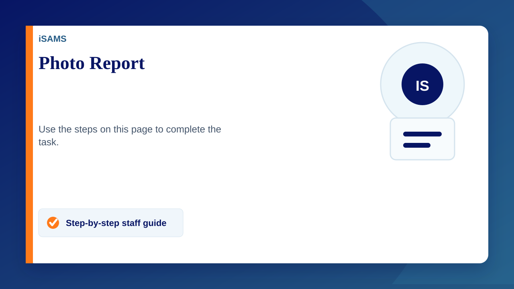

Student Photo Report (Student Manager)
- Open the Student Manager Module
- Search for the group of students needed (for example, in the Form drop-down, select Bodiam-CKI then click on Search)
- Tick all students to show in the report
- Once ticked the 'Pink drop-down' will appear in the top right corner.
- Click on the 'Pink drop-down' and select pupils photo report
- You can now see the report on the screen and if needed you can click on 'Print Photos' to either print them or save as a PDF file for future reference